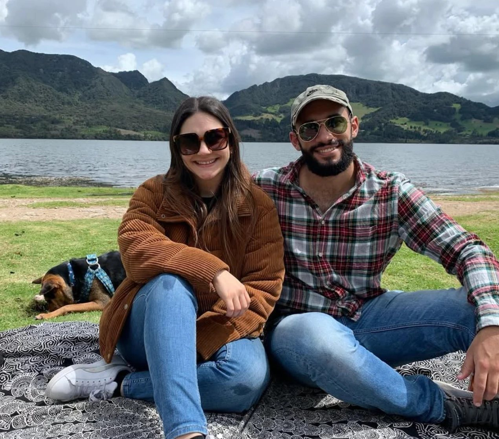
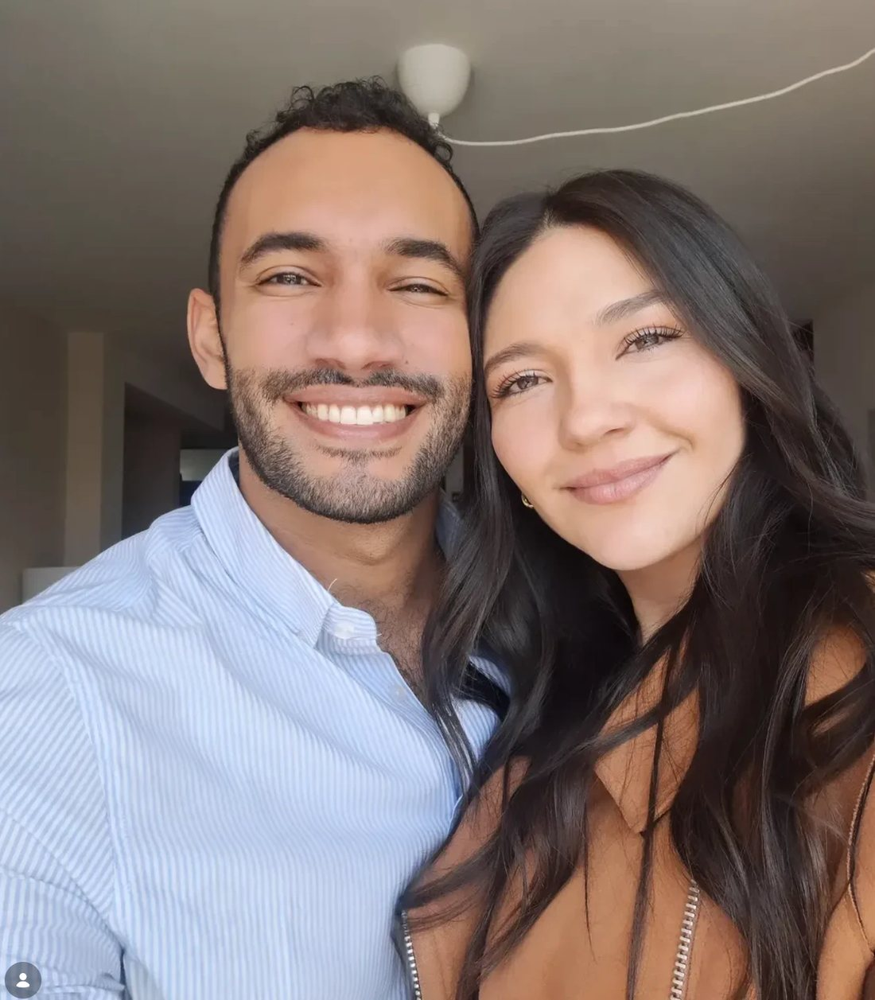

Terapia individual
Ansiedad, estrés, autoestima o momentos de cambio. Un espacio solo para ti.
Agendar
Somos Mariana y Esteban, pareja en la vida y en la consulta. Te acompañamos presencialmente en Bogotá y por videollamada desde cualquier lugar del mundo, siempre en español.

Somos una pareja de psicólogos clínicos. Creamos un espacio cálido y sin juicios para que hables de lo que te pesa, estés en Colombia o al otro lado del mundo.
Puedes elegir con quién trabajar, o tomar terapia de pareja con los dos.
Sesiones por Google Meet en un horario que se ajusta a tu zona.
Terapia con enfoque humano y basada en evidencia, para sentirte mejor en tu día a día.
Ansiedad, estrés, autoestima o momentos de cambio. Un espacio solo para ti.
AgendarComunicación, crisis, infidelidad o distancia. Puedes tomarla con los dos.
AgendarExtrañar, adaptarte, no terminar de llegar. Online desde cualquier país.
AgendarHerramientas concretas y espacio para entender lo que te desborda.
AgendarCrianza, convivencia y familias que viven separadas entre países.
AgendarUna muerte, una ruptura, una etapa. Un lugar para hacerle espacio al dolor.
Agendar

Por el formulario o WhatsApp, con lo que quieras contar.
Nos conocemos y elegimos modalidad, horario y terapeuta.
En el consultorio o por Meet, con el link en tu correo.
Sesiones semanales o quincenales, a tu ritmo.
Acompaña a adultos en procesos de ansiedad, duelo y cambios de vida. Ha trabajado de cerca con personas que migraron y con quienes se quedaron en Colombia.
Trabaja con parejas y familias, y con hombres que quieren hablar de lo que sienten sin sentirse juzgados. Cree en la terapia práctica, con tareas claras.
Si tu duda no está aquí, escríbenos. Respondemos con gusto.
Preguntar por WhatsAppSí. Los estudios muestran resultados comparables para la mayoría de motivos de consulta. Lo importante es tener un lugar privado, buena conexión y audífonos.
Google Meet. Recibes una invitación de calendario con el link y entras desde el navegador o el celular, sin instalar nada.
Te enviamos opciones de pago internacional al confirmar la cita. Las tarifas para el exterior se manejan en dólares o euros.
Claro. También puedes empezar con uno y, si es terapia de pareja, sumar sesiones con los dos.
Todo es confidencial. Tus datos se manejan según la Ley 1581 de 2012 de protección de datos y la normativa de historia clínica.
Lo usual es semanal o cada quince días, de 50 minutos. Lo definimos juntos según lo que necesites.
Déjanos tus datos y te escribimos el mismo día hábil para coordinar una llamada inicial.
Te escribimos pronto para coordinar la llamada inicial. Si prefieres, envíanos el mensaje también por WhatsApp.
Continuar por WhatsApp